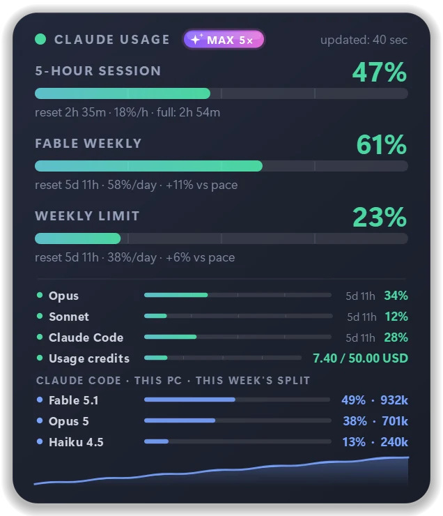
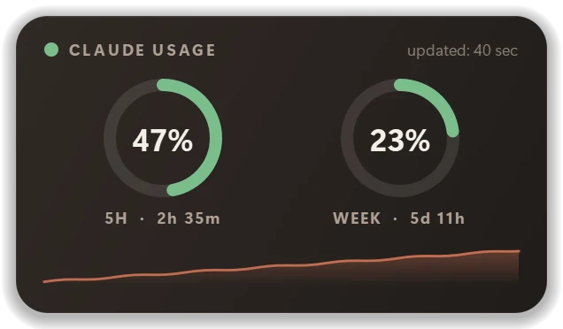
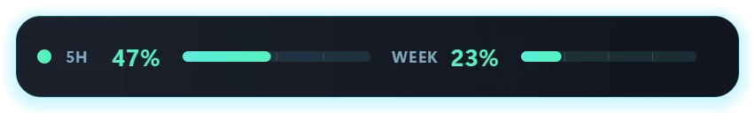
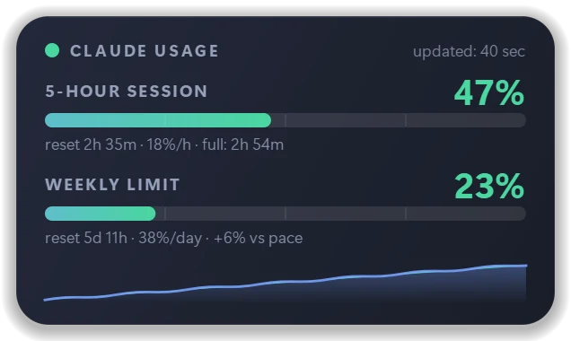
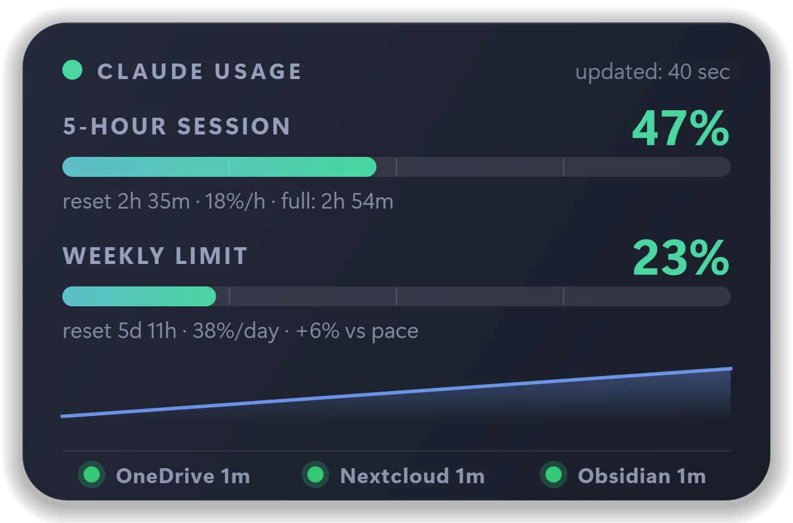
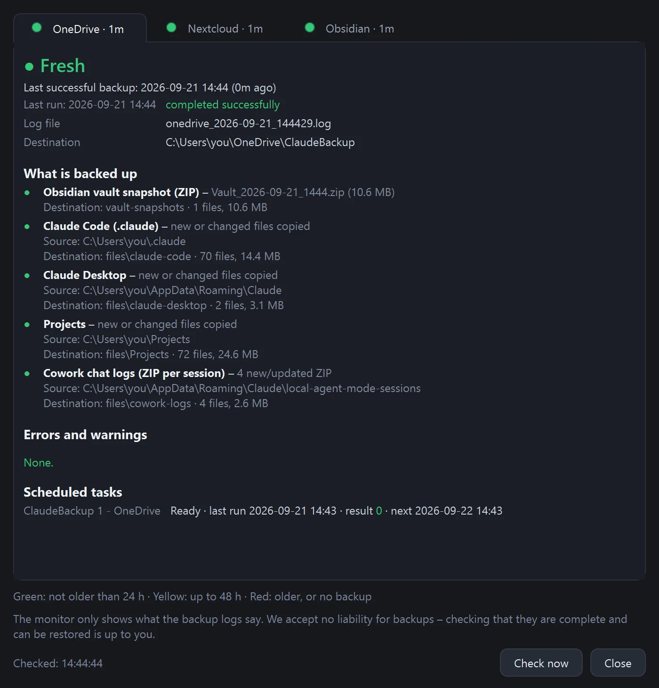
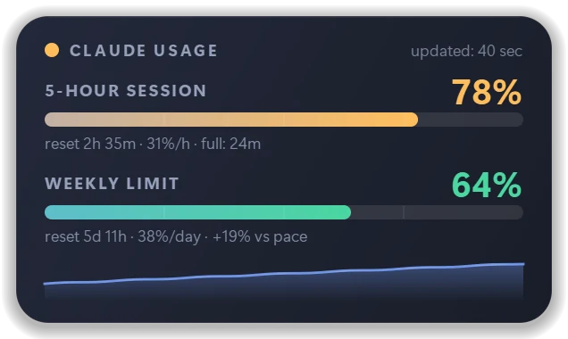
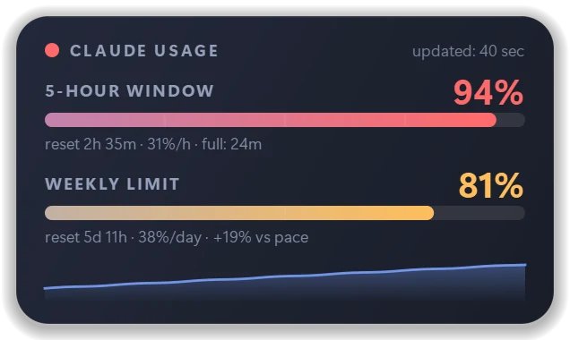
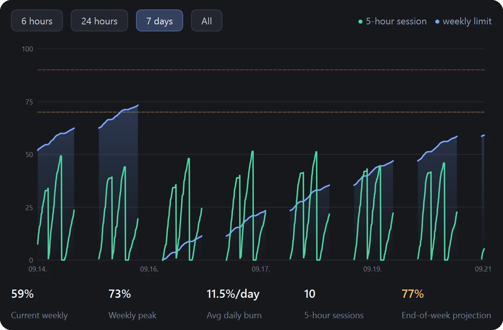

Yalnızca yerel günlükleri okuyan araçlar
- Telefonda kullandığın – görünmez
- Tarayıcıda kullandığın – görünmez
- Diğer bilgisayarların – görünmez
- Yalnızca bu tek bilgisayardaki Claude Code
- Sıfırlanma saatleri tahminden ibaret
%100 ÜCRETSİZSürüm 2.6.2Windows + macOS
Her zaman üstte duran minik bir widget, Claude kullanımını canlı gösterir: 5 saatlik oturum, haftalık limit ve tempon. Telefonunun harcadığı bile. Windows ve macOS için.
Ücretsiz. Sonsuza kadar. Demo değil. Deneme sürümü değil. Kilitli hiçbir şey yok.
0 kez bu sayfadan indirildi



Uygulamanın gerçek ekran görüntüleri, rakamlar ise demo.
Sıradan bir günlük okuyucudan fazlası
Birçok kullanım takip aracı bilgisayarındaki günlük dosyalarını okur; bu yüzden yalnızca o tek bilgisayarın ne harcadığını bilir. Claude Usage Monitor ise bunun yerine Anthropic'in sunucusuna sorabilir – ve hesabının tamamını kapsayan gerçek rakamı gösterir: telefon uygulamasında, tarayıcıda, başka bir bilgisayarda ve Claude Code'da kullandığın her şey sayılır; hepsini tek yerde, masaüstünde görürsün.

Nasıl mı? “claude.ai (tüm cihazlar)” veri kaynağını seç ve kendi tarayıcından bir kez giriş yap – Claude Code'un kullandığı girişin aynısı; uygulama şifreni hiçbir zaman görmez. Giriş yapmazsan widget, Claude Desktop'ın yerel günlüğünü okur; bu da yalnızca bu bilgisayarı kapsar.
+1 Ekstra – üstelik ücretsiz
Her kullanım takipçisi rakamlarda durur. Claude Usage Monitor bir adım öteye geçer: Claude ile ilgili yedeklerinin güncel olup olmadığını da gösterir – skill'lerin, CLAUDE.md kuralların, proje belleğin, MCP ayarların, agent konuşma günlüklerin ve Obsidian notların. Bunlar genellikle tek bir diskte durur. Bozulan bir disk, çalınan bir dizüstü, yanlış bir silme – ve aylarca süren emek gider. Paneldeki üç küçük lamba, günün her dakikası bunun senin başına gelmeyeceğini söyler.

Lambalar şunlardır: OneDrive (ilk kopya), Nextcloud (ikinci, bağımsız bulut – rclone'un desteklediği her bulut olur) ve Obsidian (kasanın tarihli anlık görüntüsü). Yalnızca gerçekten tamamlanan bir çalışma sayılır: başarısız, yarıda kesilen ya da test amaçlı bir çalışma lambayı asla yeşile çevirmez. Saatler ayarlanabilir. Ayrıntılar için herhangi bir lambaya tıkla.

Monitör yalnızca okur – hiçbir dosyayı değiştirmez, taşımaz ya da yüklemez. Her 5 dakikada bir yeniden denetler, ya da “Şimdi denetle” ile anında. Yalnızca çevrimiçi olarak OneDrive'da duran bir anlık görüntü, sırf listelemek için indirilmez.
Claude Usage Monitor dosyalarını kopyalamaz – kopyalamanın işe yarayıp yaramadığını gösterir. Kopyalamayı Claude Backup Kit yapar: satır satır okuyabileceğin birkaç kısa PowerShell betiği. Claude çalışmanı her gün OneDrive'a ve ikinci, bağımsız bir buluta yedekler ve lambaların okuduğu günlüğü yazar. Hesap yok, abonelik yok, bize hiçbir şey gönderilmez.
İndirerek kullanım koşullarını kabul etmiş olursun: uygulama ve Backup Kit ücretsizdir, “olduğu gibi”, garantisiz ve riski sana ait olmak üzere sunulur.
Yalnızca ihtiyacın olanı aç. Her adım burada – ne kullanılacak, ne ayarlanacak, nereye tıklanacak. Kit, değiştirebileceğin bir başlangıç noktasıdır – lütfen yukarıdaki sorumluluk reddini oku.
rclone-backup → Yeni uygulama parolası oluştur. Parolayı kopyala – yalnızca bir kez gösterilir. Bu, hesap parolan değildir ve istediğin zaman iptal edebilirsin.C:\Tools\ClaudeBackup.config.psd1 dosyasını düzenle (Not Defteri ile): VaultPath = Obsidian kasan (boş = Obsidian yok), ExtraFolders = yedeklenecek diğer her şey, NextcloudRemote ve NextcloudBasePath = ikinci bulut (boş = atla), DailyTime = ne zaman çalışacağı. Geri kalan her şey olduğu gibi kalabilir.Set-ExecutionPolicy -Scope CurrentUser RemoteSigned, cd C:\Tools\ClaudeBackup, Unblock-File *.ps1, .\Install-BackupKit.ps1. Gerekirse rclone'u kurar, bulut adresini, kullanıcı adını ve uygulama parolasını sorar (gizli yazılır), iki zamanlanmış görevi oluşturur, monitöre nereye bakacağını söyler ve ilk çalıştırmayı yapar..\Backup-Step2-Cloud.ps1 – kurulum 2. adımı yalnızca test olarak çalıştırdı..\Test-BackupKit.ps1 – her satırda [OK] yazmalı. Claude Usage Monitor'de: panele sağ tıkla → Yedek durum çubuğu. Üç lamba 5 dakika içinde yeşile döner, ya da Yedeklemeler… → Şimdi denetle ile anında.%USERPROFILE%\.claude) – skill'ler, ayarlar, CLAUDE.md, proje belleği, eklentiler.%APPDATA%\Claude) – ayarlar ve MCP sunucuları.config.psd1 içinde listelediğin her şey..credentials.json), Claude Desktop'ın çerezleri ve önbellekleri ile yeniden indirilebilen büyük sanal makine imajları.| Panelde yedek durum çubuğunu göster | Üç lambayı açar ya da kapatır. Sağ tık menüsünde de var: Yedek durum çubuğu. |
|---|---|
| Lambalar | Hangi lambaların gösterileceği: OneDrive, Nextcloud, Obsidian. Obsidian kasan yok mu? İşareti kaldır. |
| Lamba yanındaki etiket | Ad ve yaş · Yalnızca ad · Yalnızca lambalar. |
| Yeşil en fazla / Sarı en fazla | Saat cinsinden yaş sınırları – varsayılan 24 ve 48. Haftalık yedek mi alıyorsun? 170 ve 340 yap. |
| Yedek klasörü | 1. adımın yazdığı klasör, ör. OneDrive\ClaudeBackup. otomatik olarak bırak – kurulum bunu monitöre zaten bildirdi. |
| Yedek betiği yapılandırması | Kitin config.psd1 dosyası. Monitör buradan kasa yolunu ve bulut hedefini okur – asla parola okumaz. |
| Zamanlanmış görev filtresi | ClaudeBackup* – ayrıntı penceresinin hangi Windows görevlerini listeleyeceği. |
| Ayrıntı penceresi gösterir | Görmek istediklerini işaretle: neler yedekleniyor, içerik, hatalar ve uyarılar, zamanlanmış görevler, günlük. |
Kurulum %APPDATA%\ClaudeUsageMonitor\backup_profile.json dosyasını yazar – yalnızca klasör yolları, parola yok, token yok. Yedeklemeler sekmesinde ne ayarlarsan, bu dosyanın önüne geçer.
.claude\settings.json, MCP sunucularının API anahtarlarını içerebilir. Bunlar da yedeklenir – geri yüklemek için gerekirler – kendi OneDrive'ına ve kendi bulutuna. İki hesabı da iki adımlı oturum açmayla koru.| Bir notun eski bir sürümü | onedrive.com → dosyaya sağ tıkla → Sürüm geçmişi. |
|---|---|
| Silinmiş bir dosya | OneDrive Geri dönüşüm kutusu (30 gün) ya da Nextcloud Silinmiş dosyalar. |
| Belirli bir günün tüm kasası | vault-snapshots\Vault_…zip dosyasını boş bir klasöre aç ve Obsidian'da aç: Open folder as vault. |
| Claude Code skill'leri ve ayarları | files\claude-code klasörünü %USERPROFILE%\.claude konumuna geri kopyala, sonra Claude Code'da yeniden oturum aç. |
| Claude Desktop ayarları | Claude Desktop'ı kapat ve files\claude-desktop klasörünü %APPDATA%\Claude konumuna geri kopyala. |
logs alt klasöründe, onedrive_YYYY-MM-DD_HHMMSS.log ve nextcloud_…log adlarıyla; her satır tarih ve saatle başlamalı.KESZ içeren bir satırla, başarısız olan HIBAVAL ZARULT içeren bir satırla biter. Kitin Common.ps1 dosyası monitörün anladığı her kelimeyi belgeler.backup_profile.json içinde ayarlanabilir – nasıl yapılacağı kitin README dosyasında.Claude Usage Monitor, Claude aboneliğinin kullanım limitlerini gerçek zamanlı gösteren, Windows 10/11 ve macOS için ücretsiz ve açık kaynaklı bir masaüstü widget'ıdır – 5 saatlik oturum, haftalık limit ve model bazında haftalık limit; her biri sıfırlanmaya kalan süreyle birlikte. Diğer pencerelerinin üstünde durur. Böylece Claude kullanımını “Settings → Usage” (Ayarlar → Kullanım) sayfasını açmadan ve terminal kullanmadan kontrol edersin.
Hem Windows hem Mac için tek uygulama. Planına sayılan her şeyi kapsar: claude.ai, Claude Desktop ve Claude Code, tüm cihazlarında. Terminal aracı “Claude Code Usage Monitor” ile aynı şey değildir: bu, tepsi simgesi olan grafik bir paneldir ve komut satırı gerektirmez.
Neler sunuyor
Yeşil, sarı, kırmızı. Panel, limitin bitmeden çok önce renk değiştirir – sıfırlanmaya geri sayım ve %100'e ne zaman ulaşacağının tahminiyle birlikte.


Tempo göstergesi, haftalık limitinin haftanın kendisinden hızlı eriyip erimediğini söyler – ve haftanın sonunda nerede olacağını öngörür.
Kendi tarayıcından giriş yap – tıpkı Claude Code gibi – ve telefonundaki, tarayıcındaki ve diğer tüm bilgisayarlarındaki kullanımı da gör.
Fable, Opus, Sonnet, Claude Code, kullanım kredileri – sunucunun bildirdiği her limit, üstüne bu haftanın modellere göre dağılımı.
%70 ve %90'da (eşikleri sen seçersin) ve limitin sıfırlandığında sessiz bir bildirim. Başka hiçbir şey yok. Asla.
Widget'a çift tıkla: iki limit tek zaman çizelgesinde – 6 saat, 24 saat veya 7 gün – haftalık zirve, günlük ortalama ve sen limiti aşmadan önce renk değiştiren hafta bitimi tahminiyle.

Telemetri yok, analitik yok, bizde hesap açmak yok. Yalnızca Anthropic ile, yalnızca senin rakamların için konuşur. Giriş token'ın bilgisayarında şifreli olarak kalır – Windows DPAPI veya macOS Anahtar Zinciri ile.
Deneme süresi yok. “Pro”ya yükselt baskısı yok. Gizli bir şart yok. İndir, senin olsun.
Sadece merak ediyorsan
Claude Desktop'ın bilgisayarına zaten yazdığı kullanım günlüğünü okur. Hiçbir yere hiçbir şey gönderilmez. Yalnızca bu bilgisayarı ölçer, yaklaşık 5 dakikada bir yenilenir.
Claude Code'un kullandığı tarayıcı girişinin aynısı – gömülü tarayıcı yok, uygulamaya şifre yazmak yok. Sıfırlanma saatleri doğrudan sunucudan, yaklaşık 2 dakikada bir yenilenir.
| Sürükle | paneli taşı (ekran kenarlarına yapışır) |
|---|---|
| Sağ tık | menü: yerleşim, tema, boyut, dil, ayarlar |
| Çift tık | geçmiş ve istatistik penceresi |
| Ctrl + kaydırma | yeniden boyutlandır |
| Tepsi simgesine tık | paneli gizle / göster |
| Claude Usage Monitor | Claude'un kendi “Settings → Usage” sayfası | Claude Code günlüklerini okuyan terminal araçları | |
|---|---|---|---|
| Çalışırken hep göz önünde | Evet – her zaman üstte duran widget ve tepsi simgesi | Hayır – açman gerekir | Yalnızca açık bir terminalde |
| Windows ve macOS | Evet, ikisi için tek uygulama | Evet (web sayfası) | Değişir, komut satırı |
| Terminal gerektirir | Hayır | Hayır | Evet |
| claude.ai, Claude Desktop ve Claude Code'u tüm cihazlarda sayar | Evet, claude.ai girişiyle | Evet | Hayır – yalnızca bu bilgisayardaki Claude Code |
| Tempo, harcama hızı ve hafta bitimi tahmini | Evet | Hayır | Bazılarında |
| Kendi eşiklerinde uyarılar | Evet (varsayılan %70 / %90) | Hayır | Nadiren |
| Fiyat | Ücretsiz, açık kaynak (MIT) | Planına dahil | Çoğunlukla ücretsiz |
Kendine göre ayarla
Serin bir parıltıyla koyu mavi cam. Varsayılan tema – sakin, okunaklı, her koyu masaüstüne yakışır.
Üstüne kendi vurgu rengin, %70'ten %200'e boyut ve saydamlık.
Fiyat
İndir
Windows 10 / 11 · 64-bit
INSTALL.bat dosyasına çift tıkla.Yönetici hakları gerekmez. Windows “Windows kişisel bilgisayarınızı korudu” uyarısını gösterirse: Ek bilgi → Yine de çalıştır. Uygulama açık kaynaklıdır ama kod imzası yoktur.
b1f75517763fc8590ec23dc09dd188c640b9c41ba1e12319226a7b2607c2ac69PowerShell: Get-FileHash .\ClaudeUsageMonitor-Setup-*.zip
macOS 12 or newer · Apple Silicon
86d75d796269812dbc7b1050ef1f207c1a367a45fd5965f1090daefc3c8f76c9Terminal: shasum -a 256 ClaudeUsageMonitor-macOS-*.zip
0 kez bu sayfadan indirildi · Windows 0 · macOS 0
İndirerek kullanım koşullarını kabul etmiş olursun: uygulama ve Backup Kit ücretsizdir, “olduğu gibi”, garantisiz ve riski sana ait olmak üzere sunulur.
Bu düğmeler her zaman en yeni sürüme götürür – kurduktan sonra da uygulama kendini güncel tutar.
Aktif olarak geliştiriliyor
Sürüm notları İngilizce ve Macarca yazılır.
Yalnızca sürüm haberleri – her sürüm için birkaç kısa satır. Pazarlama yok, asla. Tek tıkla abonelikten çıkarsın.
Kimler için
“Bunu kendim için yaptım, çünkü işin tam ortasında sürekli limite takılıyordum. Sonra bütün gün bakmaktan keyif alacağım hâle gelene kadar üzerinde uğraştım. Ücretsiz, çünkü böyle bir araç ücretsiz olmalı – kullan, tadını çıkar ve ne düşündüğünü bana yaz.”
FAQ
Gerçekten ücretsiz ve işin içinde hiçbir şey yok. Demo değil, deneme sürümü değil, kırpılmış bir sürüm de değil – bu, tam ve tek sürüm. Reklam yok, ücretli paket yok, veri toplama yok. Kaynak kodu MIT lisansıyla herkese açık.
Claude Usage Monitor'ü kur: 5 saatlik oturumunu, haftalık limitini ve model bazında haftalık limitini sürekli ekranda tutar – her zaman üstte duran küçük bir widget ve sistem tepsisinde ya da menü çubuğunda bir yüzde olarak. Claude'un kendi rakamları “Settings → Usage” (Ayarlar → Kullanım) altında durur; widget aynı limitleri hiç tıklamadan gösterir.
Oturuma dayalı limit her beş saatte bir sıfırlanır. Haftalık limit, Anthropic'in hesabına atadığı sabit bir saatte her hafta sıfırlanır; bu yüzden kişiden kişiye değişir. Widget her iki sıfırlanmaya da canlı geri sayım gösterir – claude.ai girişiyle Anthropic'in sunucusundaki kesin saatleri kullanır.
Evet. Anthropic'e göre claude.ai, Claude Desktop ve Claude Code kullanımı aynı kullanım limitine sayılır. Bu yüzden widget'ın claude.ai modu, yalnızca çalıştığı bilgisayar için değil, tüm cihazların ve uygulamaların için tek bir rakam gösterir.
Hayır. “Claude Code Usage Monitor”, başka bir geliştiricinin terminal tabanlı, ayrı bir aracıdır. Gábor Vidovics'in Claude Usage Monitor'ü ise Windows ve macOS için grafik bir masaüstü widget'ıdır; tepsi simgesi, temaları ve uyarıları vardır, komut satırı gerektirmez.
Evet – üstelik bu da ücretsiz. Yedek durum çubuğu açıkken paneldeki üç lamba, OneDrive'a, Nextcloud gibi ikinci bir buluta ve Obsidian kasana alınan yedeğin güncel olup olmadığını gösterir: 24 saate kadar yeşil, 48 saate kadar sarı, daha eskiyse ya da yoksa kırmızı, son çalışma başarısız olduysa kırmızı halka. Monitör yalnızca yedekleme günlüklerini okur; yedeğin kendisini ücretsiz Claude Backup Kit alır: Claude Code skill'lerini, CLAUDE.md'yi, proje belleğini, Claude Desktop ayarlarını ve agent günlüklerini her gün kopyalar – oturum açma token'ını asla. Kit, herkesin değiştirebileceği ücretsiz bir başlangıç noktasıdır; bu yüzden yedekler için hiçbir sorumluluk kabul etmiyoruz: yedeklerin eksiksiz ve geri yüklenebilir olmasını sağlamak her kullanıcının kendi işidir.
Hayır. Gábor Vidovics tarafından geliştirilen bağımsız bir topluluk aracıdır. Anthropic ile hiçbir bağlantısı yoktur. “Claude”, Anthropic, PBC'nin ticari markasıdır.
Asla. Giriş yapmadan Claude Desktop'ın yerel günlüğünü okur. Tüm cihazlarını görmek istersen claude.ai'ye kendi tarayıcından giriş yaparsın – uygulama şifreni hiçbir zaman görmez.
Çünkü uygulamanın kod imzası yok (sertifikalar paralı, uygulama ise ücretsiz). Ek bilgi → Yine de çalıştır'a tıkla. İndirdiğin dosyayı SHA-256 sağlama toplamıyla doğrulayabilir, kaynak kodunu GitHub'da okuyabilirsin.
macOS 12 veya daha yenisi. Yukarıdaki indirme kartı, güncel derlemenin hangi işlemci için olduğunu her zaman gösterir. macOS sürümü yeni – geri bildirimin çok değerli.
Uygulama günde birkaç kez bu siteyi kontrol eder. Yeni sürüm çıkınca sana haber verir; tek tıkla indirir, doğrular, kurar ve yeniden başlar. İstersen bunu kapatabilirsin.
Windows: Ayarlar → Uygulamalar → Yüklü uygulamalar → Claude Usage Monitor → Kaldır. macOS: uygulamayı Çöp Sepeti'ne sürükle. Hepsi bu.
Geliştiriciyle konuş
Mesajın doğrudan bana, Gábor Vidovics'e ulaşır. Hepsini okuyorum. E-posta adresini yalnızca yanıt istiyorsan bırak.
Mesajın yalnızca sana yanıt vermek ve uygulamayı geliştirmek için kullanılır – ayrıntılar Gizlilik Politikası'nda.
Ücretsiz. Sonsuza kadar. Demo değil. Deneme sürümü değil. Kilitli hiçbir şey yok.